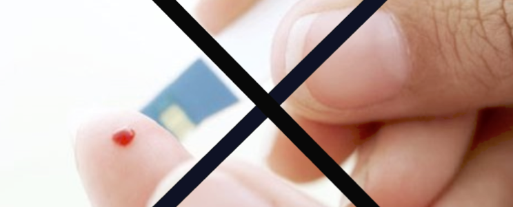

Платформа предлагает решения под ключ для неограниченного, непрерывного мониторинга пациентов с хроническими заболеваниями. Она построена для простоты использования и оптимизирована для беспрерывного мониторинга пациента.
Работники здравоохранения смогут эффективно использовать контроль физиологического состояния пациента и своевременно среагировать, чтобы предотвратить опасные события. Эта задача будет упрощена путем комплексного облачного обмена данными с полуавтоматической системой анализа.
В то же время пациенты могут рассчитывать на 288 измерений в течение суток с нашим прибором, разработанным для обеспечения надежного сбора данных в ходе повседневной жизни. Решение состоит из трех компонентов: датчика устройства, монитора и облачного сервиса.
Прибор является носимым гаджетом, простым в использовании, надежным и точным.
Сценарий использования:
Мы считаем, что комфорт для пациента является краеугольным камнем для обеспечения непрерывного и надежного мониторинга. Именно поэтому мы разработали прибор - носимый гаджет, который не требуют проводов.
Он оптимизирован для износостойкости и простоты эксплуатации. Наш подход к измерениям и сочетание нескольких технологий обеспечивает стабильный мониторинг даже при движении. Это, в свою очередь, дает пациентам свободу передвижения в повседневной жизни и предоставляет данные для стороннего наблюдателя, что фактически представляет собой эквивалент стационарного наблюдения в больнице.
Прибор для непрерывного мониторинга уровня глюкозы в крови является устройством, которое собирает показания об уровне глюкозы в режиме реального времени, в течение дня и ночи, что позволяет людям с диабетом узнавать свой уровень глюкозы в крови в любой момент с помощью простого нажатия кнопки. Прибор обеспечивает 288 измерений глюкозы в день (каждые 5 минут). Прибор полностью устраняет необходимость в других приборах для использования которых требуется делать прокалывания, и предоставляет дополнительную информацию для более информированных решений относительно лечения и улучшения контроля за уровнем глюкозы.
Прибор является первым поколением Vital Monitor в части расширяемой технологической платформы, обеспечивающей непрерывный сбор данных, анализ измерений и отчетности.